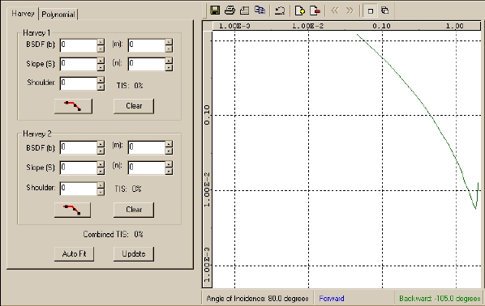

The BSDF Fit window consists of two panels: parameters and graph.
Parameters (left)
Corresponds to the active BSDF fit mode: Harvey or
Polynomial.
Graph (right)
Same layout for both Harvey and Polynomial, and includes a
toolbar and status bar.

BSDF Fit Utility Menus and Toolbar
The BSDF Fit graph window includes dynamic ASAP menu commands, which appear when the BSDF fit window is open, as well as a toolbar, above the BSDF graph window, for quick access to common operation in Windows.
Graph Window (BSDF)
The Graph window displays measured data on an x, y grid. It also displays the Harvey or Polynomial fitted curve.
Measuring Angles
Angles are measured from specular as illustrated in this topic.
Model Description Dialog
This dialog box opens from either the Roughness Models tab or the Scatter Models tab on the Quick Start toolbar. Double-click a model name to open the dialog.
Harvey Model
Most materials and surface treatments that are used in illumination applications fit the modified Harvey model, or a sum or two Harvey models.
Harvey Dialog in BSDF Fit Utility
The Harvey (Models) dialog on the BSDF Fit Utility window includes identical data elements for the Harvey 1 and Harvey 2 models. These elements correspond to the isotropic HARVEY command options in ASAP.
Harvey Parameters Dialog
Automatic fitting for both the Harvey and Polynomial fit models is accomplished with a down-hill simplex method.